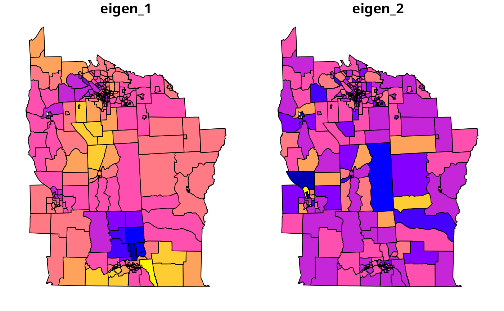

Introduction 1
The Moran eigenvector approach (Dray, Legendre, and Peres-Neto 2006; Griffith and Peres-Neto 2006) involved the spatial patterns represented by maps of eigenvectors; by choosing suitable orthogonal patterns and adding them to a linear or generalised linear model, the spatial dependence present in the residuals can be moved into the model.
It uses brute force to search the set of eigenvectors of the matrix , where
$$\mathbf{M} = \mathbf{I} -
\mathbf{X}(\mathbf{X}^{\rm T}
\mathbf{X})^{-1}\mathbf{X}^{\rm T}$$ is a symmetric and
idempotent projection matrix and
are the spatial weights. In the spatial lag form of
SpatialFiltering and in the GLM
ME form below,
is an
-vector
of ones, that is the intercept only.
In its general form, SpatialFiltering
chooses the subset of the
eigenvectors that reduce the residual spatial autocorrelation in the
error of the model with covariates. The lag form adds the covariates in
assessment of which eigenvectors to choose, but does not use them in
constructing the eigenvectors.
SpatialFiltering was implemented and
contributed by Yongwan Chun and Michael Tiefelsdorf, and is presented in
Tiefelsdorf and Griffith (2007);
ME is based on Matlab code by Pedro Peres-Neto
and is discussed in Dray, Legendre, and
Peres-Neto (2006)
and Griffith and Peres-Neto (2006).
library(spdep)
require("sf", quietly=TRUE)
if (packageVersion("spData") >= "2.3.2") {
NY8 <- sf::st_read(system.file("shapes/NY8_utm18.gpkg", package="spData"))
} else {
NY8 <- sf::st_read(system.file("shapes/NY8_bna_utm18.gpkg", package="spData"))
sf::st_crs(NY8) <- "EPSG:32618"
NY8$Cases <- NY8$TRACTCAS
}## Reading layer `NY8_utm18' from data source
## `/home/rsb/lib/r_libs/spData/shapes/NY8_utm18.gpkg' using driver `GPKG'
## Simple feature collection with 281 features and 17 fields
## Geometry type: POLYGON
## Dimension: XY
## Bounding box: xmin: 358241.9 ymin: 4649755 xmax: 480393.1 ymax: 4808545
## Projected CRS: WGS 84 / UTM zone 18N
NY_nb <- read.gal(system.file("weights/NY_nb.gal", package="spData"), override.id=TRUE)
library(spatialreg)
nySFE <- SpatialFiltering(Z~PEXPOSURE+PCTAGE65P+PCTOWNHOME, data=NY8, nb=NY_nb, style="W", verbose=FALSE)
nylmSFE <- lm(Z~PEXPOSURE+PCTAGE65P+PCTOWNHOME+fitted(nySFE), data=NY8)
summary(nylmSFE)##
## Call:
## lm(formula = Z ~ PEXPOSURE + PCTAGE65P + PCTOWNHOME + fitted(nySFE),
## data = NY8)
##
## Residuals:
## Min 1Q Median 3Q Max
## -1.5184 -0.3523 -0.0105 0.3221 3.1964
##
## Coefficients:
## Estimate Std. Error t value Pr(>|t|)
## (Intercept) -0.51728 0.14606 -3.542 0.000469 ***
## PEXPOSURE 0.04884 0.03230 1.512 0.131717
## PCTAGE65P 3.95089 0.55776 7.083 1.25e-11 ***
## PCTOWNHOME -0.56004 0.15688 -3.570 0.000423 ***
## fitted(nySFE)vec13 -2.09397 0.60534 -3.459 0.000630 ***
## fitted(nySFE)vec44 -2.24003 0.60534 -3.700 0.000261 ***
## fitted(nySFE)vec6 1.02979 0.60534 1.701 0.090072 .
## fitted(nySFE)vec38 1.29282 0.60534 2.136 0.033613 *
## fitted(nySFE)vec20 1.10064 0.60534 1.818 0.070150 .
## fitted(nySFE)vec14 -1.05105 0.60534 -1.736 0.083662 .
## fitted(nySFE)vec75 1.90600 0.60534 3.149 0.001826 **
## fitted(nySFE)vec21 -1.06331 0.60534 -1.757 0.080138 .
## fitted(nySFE)vec36 -1.17861 0.60534 -1.947 0.052578 .
## fitted(nySFE)vec61 -1.08582 0.60534 -1.794 0.073986 .
## ---
## Signif. codes: 0 '***' 0.001 '**' 0.01 '*' 0.05 '.' 0.1 ' ' 1
##
## Residual standard error: 0.6053 on 267 degrees of freedom
## Multiple R-squared: 0.3401, Adjusted R-squared: 0.308
## F-statistic: 10.58 on 13 and 267 DF, p-value: < 2.2e-16## Analysis of Variance Table
##
## Model 1: Z ~ PEXPOSURE + PCTAGE65P + PCTOWNHOME
## Model 2: Z ~ PEXPOSURE + PCTAGE65P + PCTOWNHOME + fitted(nySFE)
## Res.Df RSS Df Sum of Sq F Pr(>F)
## 1 277 119.619
## 2 267 97.837 10 21.782 5.9444 3.988e-08 ***
## ---
## Signif. codes: 0 '***' 0.001 '**' 0.01 '*' 0.05 '.' 0.1 ' ' 1Since the SpatialFiltering approach does
not allow weights to be used, we see that the residual autocorrelation
of the original linear model is absorbed, or ‘whitened’ by the inclusion
of selected eigenvectors in the model, but that the covariate
coefficients change little. The addition of these eigenvectors – each
representing an independent spatial pattern – relieves the residual
autocorrelation, but otherwise makes few changes in the substantive
coefficient values.
The ME function also searches for
eigenvectors from the spatial lag variant of the underlying model, but
in a GLM framework. The criterion is a permutation bootstrap test on
Moran’s
for regression residuals, and in this case, because of the very limited
remaining spatial autocorrelation, is set at
.
Even with this very generous stopping rule, only few eigenvectors are
chosen; their combined contribution only just improves the fit of the
GLM model.
nyME <- ME(Cases~PEXPOSURE+PCTAGE65P+PCTOWNHOME, data=NY8, offset=log(POP8), family="poisson", listw=NYlistwW, alpha=0.46)
nyME## Eigenvector ZI pr(ZI)
## 0 NA NA 0.31
## 1 24 NA 0.44
## 2 223 NA 0.42
## 3 206 NA 0.43
## 4 169 NA 0.48
nyglmME <- glm(Cases~PEXPOSURE+PCTAGE65P+PCTOWNHOME+offset(log(POP8))+fitted(nyME), data=NY8, family="poisson")
summary(nyglmME)##
## Call:
## glm(formula = Cases ~ PEXPOSURE + PCTAGE65P + PCTOWNHOME + offset(log(POP8)) +
## fitted(nyME), family = "poisson", data = NY8)
##
## Coefficients:
## Estimate Std. Error z value Pr(>|z|)
## (Intercept) -8.13431 0.18388 -44.237 < 2e-16 ***
## PEXPOSURE 0.14136 0.03134 4.511 6.45e-06 ***
## PCTAGE65P 4.16875 0.60149 6.931 4.19e-12 ***
## PCTOWNHOME -0.39290 0.19222 -2.044 0.04096 *
## fitted(nyME)vec24 1.62658 0.72243 2.252 0.02435 *
## fitted(nyME)vec223 0.92941 0.70391 1.320 0.18671
## fitted(nyME)vec206 -0.11559 0.68987 -0.168 0.86693
## fitted(nyME)vec169 -1.82674 0.68142 -2.681 0.00735 **
## ---
## Signif. codes: 0 '***' 0.001 '**' 0.01 '*' 0.05 '.' 0.1 ' ' 1
##
## (Dispersion parameter for poisson family taken to be 1)
##
## Null deviance: 428.25 on 280 degrees of freedom
## Residual deviance: 340.08 on 273 degrees of freedom
## AIC: Inf
##
## Number of Fisher Scoring iterations: 5
nyGLMp <- glm(Cases~PEXPOSURE+PCTAGE65P+PCTOWNHOME+offset(log(POP8)), data=NY8,family="poisson")
anova(nyGLMp, nyglmME, test="Chisq")## Analysis of Deviance Table
##
## Model 1: Cases ~ PEXPOSURE + PCTAGE65P + PCTOWNHOME + offset(log(POP8))
## Model 2: Cases ~ PEXPOSURE + PCTAGE65P + PCTOWNHOME + offset(log(POP8)) +
## fitted(nyME)
## Resid. Df Resid. Dev Df Deviance Pr(>Chi)
## 1 277 353.35
## 2 273 340.08 4 13.269 0.01003 *
## ---
## Signif. codes: 0 '***' 0.001 '**' 0.01 '*' 0.05 '.' 0.1 ' ' 1Figure shows the spatial patterns chosen to match the very small amount of spatial autocorrelation remaining in the model. As with the other Poisson regressions, the closeness to TCE sites is highly significant. Since, however, many TCE sites are also in or close to more densely populated urban areas with the possible presence of both point-source and non-point-source pollution, it would be premature to take such results simply at their face value. There is, however, a potentially useful contrast between the cities of Binghamton in the south of the study area with several sites in its vicinity, and Syracuse in the north without TCE sites in this data set.